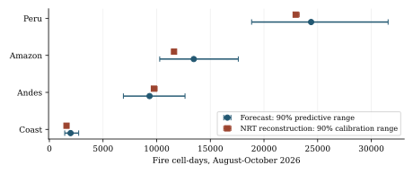
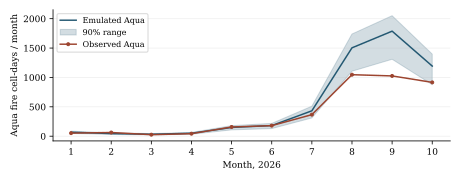

Elis: Harmonizing the Fire Record of Peru, 2000–2026
Team Log N + 1 · Peru
Abstract
Changes in satellite resolution and sampling complicate long-term fire monitoring. We construct a comparable record for Peru using MODIS and VIIRS observations aggregated to 0.1° fire cell-days. A Chapman capture–recapture estimator is calibrated on near-simultaneous Aqua and S-NPP overpasses, with region-specific corrections, bootstrap uncertainty and a complementary statistical MODIS emulator. The naive detection sum rises from 10,375 in 2011 to 92,807 in 2012 (8.95 times). On held-out years 2021–2024, the national annual discrepancy between Aqua-based and VIIRS-based reconstructions is 3.77%, whereas the naive cross-unit comparison is 333.90%. Annual reconstructed activity correlates with MapBiomas burned area at r = 0.748. For August–October 2026, the one-month-lead seasonal forecast is 24,392 fire cell-days (90% predictive range 18,848–31,568); the provisional reconstruction is 22,955 (22,756–23,280, calibration range). National lead-one ranked probability skill is 0.426 against climatology. Dependence diagnostics and a calibrated simulation indicate residual undercounting, approximately 11% in the best-fit simulated scenario; this is not an empirically identified correction. Elis therefore presents a conservative reconstruction with conditional ranges, separates forecasts from observations, and supports reproducible comparison across sensor transitions.
Keywords: active fire; Peru; MODIS; VIIRS; capture–recapture; sensor harmonization; seasonal prediction
1 Introduction
A longer satellite record is not necessarily a more comparable one. MODIS samples active fire at approximately 1 km, whereas the VIIRS I-band product samples at 375 m. Differences in sensitivity, observation time and the number of operating platforms alter detection totals even when underlying activity is unchanged. Agricultural landscape comparisons document such sensor-dependent differences (Vadrevu and Lasko, 2018). A detection is also not a delineated fire event: event reconstruction requires additional spatial and temporal assumptions (Andela et al., 2019).
For Peru, this discontinuity matters when interpreting historical variability and training seasonal outlooks. Our objective is a comparable regional record, rather than an inventory of individual fires or emissions. Contributions are: calibration restricted to near-simultaneous overpasses; a separate emulator and held-out reconstruction check; explicit dependence and underestimation diagnostics; and a forecast and continuity layer whose uncertainty and validation are kept distinct from the historical record.
2 Data
The study covers Peru, from November 2000 through 13 November 2026. FIRMS supplies MODIS Collection 6.1 Terra/Aqua and VIIRS 375 m observations from S-NPP, NOAA-20 and NOAA-21 (NASA, n.d.). Standard-processing observations form the historical record; August–November 2026 uses near-real-time (NRT) inputs. November is partial and is not extrapolated to a full month. S-NPP is the calibrated VIIRS reference; other VIIRS platforms are not simply added to its counts.
Product characteristics follow NASA VIIRS Land SIPS (n.d.). Standard data retain vegetation detections (type = 0), MODIS confidence at least 30 and VIIRS nominal/high confidence. Known outages and degraded Aqua coverage are masked using scripts/config.py. Because NRT lacks the type field, a static-source mask flags cells with at least five non-vegetation detections and a non-vegetation share of at least one half in 2012–2025. Its evaluation on 2024–2025 overlaps those construction years and is therefore in-sample.
INEI department boundaries define three macroregions: Amazon, Andes and Coast. Cells are assigned to the department covering the largest fraction of their area; Callao is included as a departmental unit. These administrative groups facilitate regional reporting but do not coincide exactly with ecological zones.
Seasonal predictors include NOAA CPC ONI, ENFEN/IGP ICEN and SPI drought indices derived from NASA POWER precipitation. These are explanatory inputs, not additional fire observations. MapBiomas Fuego Peru burned-area statistics are used only for validation, not to calibrate the harmonization. Although the source archive extends earlier, scripts/mapbiomas.py retains 2000–2025, and scripts/validate.py correlates shared annual totals in 2001–2025, excluding the incomplete first year.
3 Methods
3.1 Estimand, grid and capture–recapture
An observed fire cell-day is a 0.1° grid cell (approximately 11 km across) with at least one detection on a date. Multiple detections in the same cell and date count once per sensor. The reconstruction targets latent active cell-days sampled by the afternoon overpass and its nighttime counterpart; it neither counts distinct fires nor measures burned area.
Capture–recapture has also been applied to terrestrial fire records (Rho Environmetrics and John Field Consulting, 2011). For each region and calendar month, nA and nS denote Aqua and S-NPP cell-days and m their intersection. The Chapman estimator and sensor detection fractions are
Calibration uses 2013–2020 overpasses less than 20 minutes apart. Asynchronous observations confound missed detections with activity that starts or ends between passes. Fewer than five recaptures trigger pooling across adjacent months, then the region. The implementation uses the Seber variance, a Chao log-normal interval bounded below by the observed union, and 500 bootstrap resamples of calibration years.
After calibration, Aqua counts divided by p̂A reconstruct the pre-VIIRS period. Region/season bias factors measured only in calibration years correct Amazon and Coast estimates; the Andes factor remains unchanged because its annual interval includes zero. Early Terra counts are bridged to Aqua using 2003–2011 overlap. From 2012, S-NPP counts divided by p̂S provide the main series, with Aqua on outage days. After the recorded S-NPP endpoint in November 2026, NOAA-20 is scaled to S-NPP using regional overlap ratios.
3.2 Uncertainty and structural transfer
Published ranges are 90% intervals. Before 2012, whole-year structural residual blocks supplement calibration uncertainty; Aqua residuals are derived from calibration years and centered at the regional total, while Terra uses backcast residuals. Annual and seasonal intervals are quantiles of sums of aligned replicate draws, never sums of monthly interval endpoints. Post-2012 ranges primarily describe calibration uncertainty and do not encompass all shared omissions or structural bias.
3.3 Bayesian three-list diagnostic
An experimental model adds NOAA-20 over April 2018–December 2022. Seven observed capture histories h ∈ {0,1}3 excluding 000 are fitted as Poisson counts. A hierarchical log-linear formulation includes satellite main effects, regional/monthly and yearly variation, and pairwise dependence:
The missing three-way interaction is an identifying assumption. NumPyro NUTS sampling and posterior predictive checks assess fit. NOAA-20's later pass makes the inferred population a temporal-window quantity rather than the simultaneous snapshot in Equation (1). Consequently, the diagnostic is not used as a multiplier for the published record.
3.4 Statistical MODIS emulator and underestimation simulation
A histogram gradient-boosting classifier predicts whether Aqua detects a S-NPP cell-day from detection count, radiative-power summaries, brightness, scan/track geometry, day/night flags, region and seasonal terms. Training uses 2013–2020; classification is tested in 2021–2024. Summed probabilities plus an Aqua-only residual yield the MODIS equivalent, with Bernoulli/Poisson simulation and resampled structural errors supplying its 90% range. This is a statistical mapping, not a radiance-level sensor simulation.
A separate latent-intensity simulator represents heterogeneous detectability and activity turnover between passes. It is fitted to overlap and radiative-power-dependent persistence statistics. Estimators are tested against simulated truth across a best-fit scenario and less compatible alternatives. The exercise diagnoses identifiability and interval failure; it does not supply an observed correction for Peru.
3.5 Seasonal prediction and validation
Ridge regression predicts log anomalies of August–October fire cell-days from recent activity, ONI or ICEN, and SPI-3/6/12. Leads are one, four, seven and ten months. Leave-one-year-out validation over 2003–2025 selects predictor sets, regularization and spread within training folds. Four ordered classes use historical percentile thresholds; log-normal predictive distributions give class probabilities and ranges.
A regional model is published only when RPSS ≥ 0.05 and log-scale MAE skill is positive; otherwise climatology is shown. Departments below the configured activity threshold receive no forecast. The 2026 test excludes that year from fitting, but is a retrospective out-of-sample reconstruction, not proof that forecasts were issued before the season.
3.6 Continuity and sealed predictions
A simulated MODIS shutdown switches the MODIS-scale display to the emulator. The harmonized VIIRS reconstruction retains its fixed calibration, except for its outage-filling dependency. A separate live workflow predicts same-day Aqua counts from VIIRS, seals inputs, model/calibration identifiers and canonical JSON with SHA-256 hashes, then scores later Aqua retrievals. This tests the instrument mapping, not future fire occurrence. A hash proves integrity, not that observations were unavailable when the prediction was sealed.
4 Results
4.1 Discontinuity, reconstruction error and historical variation
The 2011–2012 naive sum increases 8.95 times. This is not evidence of an equivalent increase in fire activity, and harmonization does not imply that all genuine interannual change vanishes. Table 1 distinguishes a same-unit reconstruction comparison from the intentionally misleading cross-unit naive baseline.
| Region | Aqua vs VIIRS (%) | Naive baseline (%) | MapBiomas r |
|---|---|---|---|
| Peru | 3.77 | 333.90 | 0.748 |
| Amazon | 2.31 | 361.44 | 0.647 |
| Andes | 6.98 | 336.76 | 0.725 |
| Coast | 9.01 | 199.16 | 0.674 |
The descriptive log-linear national slope over 2003–2025 is +16.77% per year for raw detections and +0.18% for the harmonized record. No slope confidence interval is exported; these are fitted summaries, not evidence of a statistically significant ecological trend or measured emissions change.

| Month | Estimate | 90% range |
|---|---|---|
| August 2005 | 20,063 | 16,689–25,924 |
| August 2010 | 19,028 | 15,936–24,665 |
| August 2020 | 15,894 | 15,447–16,471 |
| September 2024 | 15,520 | 15,219–15,940 |
4.2 Seasonal outlook: withheld 2026 and backtest skill
Table 3 compares forecasts fitted through 2025 with provisional 2026 reconstruction. All four reference values fall within the forecast ranges. The most likely class is correct for Peru, Amazon and Andes (normal), but not Coast (very high forecast; normal reconstruction). One withheld season does not establish long-term forecast calibration.
| Region | Forecast [90% range] | NRT reconstruction [90% range] |
|---|---|---|
| Peru | 24,392 [ 18,848–31,568 ] | 22,955 [ 22,756–23,280 ] |
| Amazon | 13,456 [ 10,284–17,606 ] | 11,618 [ 11,509–11,775 ] |
| Andes | 9,337 [ 6,897–12,641 ] | 9,742 [ 9,501–10,044 ] |
| Coast | 1,976 [ 1,430–2,732 ] | 1,596 [ 1,561–1,668 ] |

| Lead (months) | Peru RPSS | Departments with skill / 20 eligible |
|---|---|---|
| 1 | 0.426 | 15 |
| 4 | 0.174 | 6 |
| 7 | 0.079 | 9 |
| 10 | -0.084 | 6 |
At the current ten-month lead, model-based department outlooks are retained for Áncash, Cusco, Junín, La Libertad, Lima and Pasco; national output falls back to climatology. In the separate sensor-transition experiment, fitting on 2003–2011 and testing 2013–2025 yields a national median observed/predicted ratio of 4.49 for raw detections versus 1.02 for harmonized activity. The raw model underpredicts after sensor entry; it does not demonstrate inflated future risk.
4.3 MODIS emulation and Aqua drift
The emulator's held-out classification AUC is 0.756, with 16.8% monthly total error nationally. It provides a complementary check but uses the same satellite family as the reconstruction and is not independent ground truth. Its extrapolation after Aqua drift estimates a stable-orbit counterfactual.
| Year | Observed relative to emulated (%) |
|---|---|
| 2023 | -7.5 |
| 2024 | -2.1 |
| 2025 | -15.3 |
| 2026, partial | -28.8 |

5 Validation
Sensor reconstruction. The main test compares Aqua-only and VIIRS-only reconstructions on jointly available days of held-out years. It tests temporal transfer of the calibration, not accuracy against a fully observed latent population. The naive baseline divides detection totals by estimated cell-days and therefore is not a conventional same-unit accuracy score. Aqua-era bias correction improves regional comparability, although national cancellation of opposing regional biases can make the uncorrected annual total appear closer.
External consistency. MapBiomas correlations use annual burned-area and activity patterns, without converting one quantity to the other. The Coast and Andes correlations remain imperfect, and a single reference cannot identify absolute omissions. MapBiomas input-sensor transitions and its use of FIRMS hot spots to filter Andean scars limit independence. The within-Landsat-era correlations reported in the technical notes are not exported in the processed JSON and are not treated here as additional verified results.
Forecast and live checks. Cross-validation assesses historical probabilistic performance; the 2026 test excludes its target year from fitting. Neither substitutes for prospective evaluation. Early live seals were generated after the corresponding dates and constitute pipeline checks. Prospective status requires public timestamp evidence that the seal preceded availability of the Aqua reference, rather than merely a matching hash.
6 Discussion
The principal result is improved comparability across instruments, not recovery of all fire. Restricting calibration to near-simultaneous passes addresses a specific confounder: a detection in one list alone may represent temporal turnover rather than a sensitivity difference. Region/season transfer factors then address systematic gaps between reconstruction rules on ordinary days. The retained historical peaks show why removing an instrumental discontinuity should not be equated with smoothing away actual variation.
Previous MODIS–VIIRS comparisons support the need for sensor-specific interpretation (Vadrevu and Lasko, 2018). The present emulator operates on aggregated detection features; it does not reproduce the physical detection algorithm. Similarly, the disagreement between sensors is only a candidate indicator of fire regime. Without controls for time, geometry, cloud and land cover, it cannot classify individual fires, identify deforestation fronts or determine site-level threat.
Continuity after MODIS depends on keeping a consistent observation scale, monitoring changes in VIIRS platforms and handling outages explicitly. A shutdown scenario establishes computational continuity under the adopted calibration; it does not validate future sensor stability. Live scoring can expose subsequent drift, but its first retrospective entries cannot demonstrate prospective accuracy.
The seasonal experiment illustrates how a measurement discontinuity propagates into a statistical model. Its result concerns forecast error on the chosen target and split, not effects on national greenhouse-gas inventories or agency resource allocation. Elis is a research and interpretation prototype; effectiveness for emergency deployment has not been evaluated.
7 Limitations and assumptions
Dependence and invisible activity. Positive dependence and heterogeneous sensitivity undermine the two-list independence assumption. The best-fit simulation in technical note 04 gives approximately 11% underestimation, with a simulated truth/reconstruction factor spanning 1.10–1.18 across replicates. That span is a simulation result, not a confidence interval for Peru. The conservative “lower-bound” interpretation is conditional, not a mathematical guarantee for every region and month. Joint cloud/smoke omissions can be larger and remain unidentified.
Three-list identifiability. Excluding the three-way interaction identifies the unseen history only under that assumption. NOAA-20 asynchrony changes the effective temporal population. No three-list multiplier is applied. The simulation comparison is also incomplete in some alternative scenarios, as documented in note 04; no tested alternative justifies a universal correction.
Ranges and early record. The Terra bridge through 2002 is low confidence. In build_replicates, regional centering does not remove monthly seasonal bias. Andes low-season estimates and early Terra estimates may lie near an endpoint of asymmetric ranges. Post-2012 narrow calibration bands should not be read as comprehensive uncertainty. Bootstrap precision does not resolve structural identifiability.
Provisional inputs and aggregation. NRT classification and incomplete November coverage can change with later releases. The static mask can remove genuine vegetation detections and its validation overlaps its training period. Macroregions mix ecosystems, and a 0.1° cell-day cannot resolve fire extent, duration within the day, or individual incidents.
Forecast scope. The short seasonal history limits model complexity. Leave-one-year-out tests train on years on both sides of a withheld year, so they are not rolling-origin operational tests. Reconstructed targets inherit harmonization uncertainty; forecast ranges do not fully propagate it. Skill statistics and fitted trends lack exported sampling intervals. The assistant's numerical checks do not establish causal or semantic correctness.
8 Conclusions
Elis provides a reproducible way to compare active-fire cell-days across Peru's MODIS and VIIRS eras. Near-simultaneous capture–recapture calibration, regional transfer corrections and a separate MODIS emulator reduce instrument-related inconsistencies while retaining historical variability. Held-out reconstruction agreement and an external burned-area comparison support comparability, without establishing an unbiased total-fire census.
Seasonal outlooks add useful probabilistic context where they outperform climatology, with a fallback elsewhere. Dependence, shared omissions, early bridging, Aqua drift and provisional NRT data remain material limitations. The priority for subsequent validation is genuinely prospective scoring, rolling-origin seasonal evaluation and additional observations that constrain common sensor failures.
Data and code availability
Source code and processed products: github.com/piales00/Elis. Application: elis-peru.vercel.app. API: elis-api.onrender.com. Public live feed: github.com/piales00/elis-live. Raw FIRMS downloads and intermediate model artifacts are not versioned. The API serves precomputed products; it does not rerun the heavy estimation on each request.
Numerical provenance is attached to visible HTML values and checked by scripts/check_report_figures.py against the processed JSON. Seasonal reconstruction ranges are exported from aligned intermediate replicates to docs/report/figures/season-ranges.json, with source and series hashes. Regenerate this export with --aggregate-ranges when intermediates are available. Figures are reproducible with scripts/build_report_figures.py (matplotlib). Technical notes 01–07 document experimental analyses whose full intermediates are not included in the public snapshot.
Use of AI tools
AI assistants supported programming and manuscript drafting. The authors remain responsible for the methods, numerical checks and interpretation. The application assistant, Ask Elis, uses Google Gemini with tools over processed data; figures are verified against the processed data through tool-result checks. This verification can flag unsupported numbers but does not guarantee that generated interpretations are correct.
References
Andela, N., et al. (2019). The Global Fire Atlas of individual fire size, duration, speed and direction. Earth System Science Data, 11, 529–552. https://essd.copernicus.org/articles/11/529/2019/.
NASA (n.d.). Fire Information for Resource Management System (FIRMS). https://firms.modaps.eosdis.nasa.gov/.
NASA VIIRS Land SIPS (n.d.). VIIRS Active Fire Product User's Guide. https://viirsland.gsfc.nasa.gov/PDF/VIIRS_activefire_User_Guide.pdf.
Rho Environmetrics and John Field Consulting (2011). Using capture-mark-recapture methods to estimate fire starts in the United Energy distribution area. Technical report, 2 December; Australian Energy Regulator archive. Archived report.
Vadrevu, K. P., and Lasko, K. (2018). Intercomparison of MODIS AQUA and VIIRS I-Band Fires and Emissions in an Agricultural Landscape—Implications for Air Pollution Research. Remote Sensing, 10, 978. https://doi.org/10.3390/rs10070978.